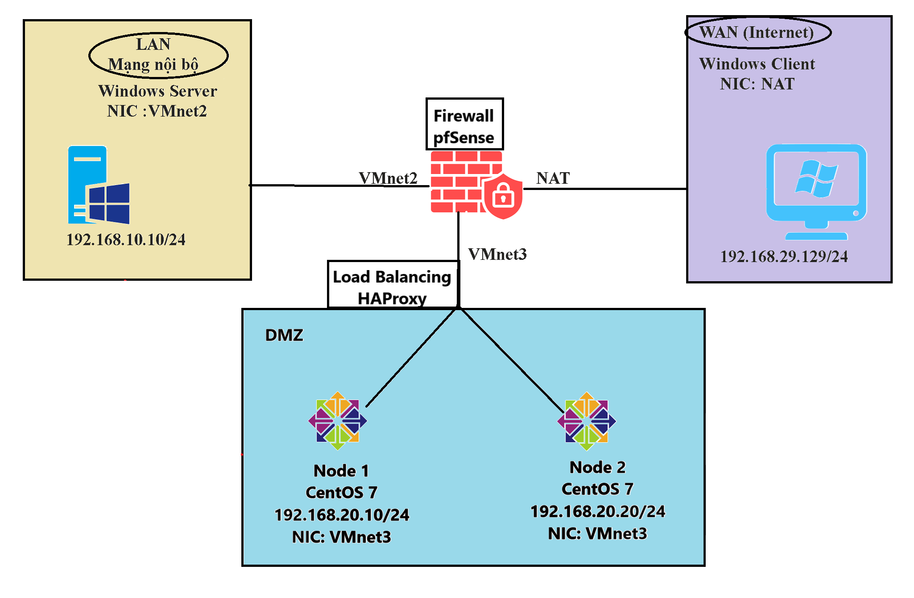
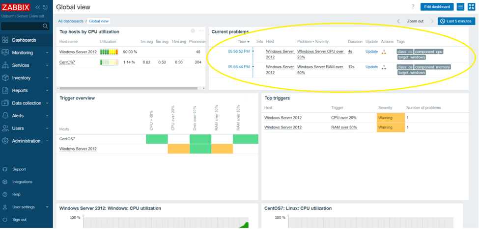
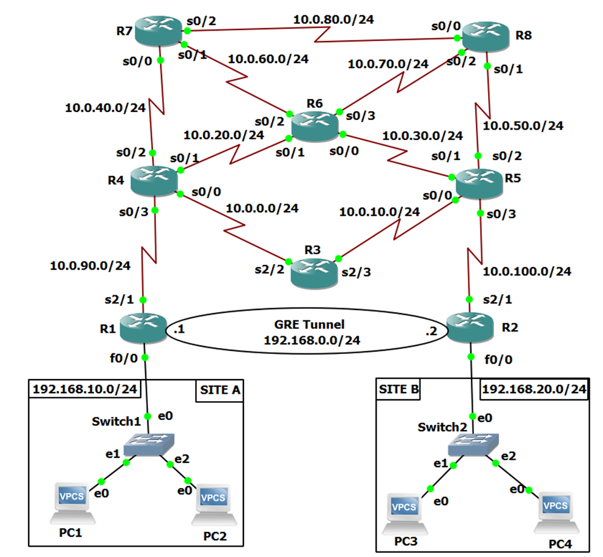

Mục tiêu nghề nghiệp
Em là sinh viên năm cuối chuyên ngành Kỹ thuật Máy tính với nền tảng kiến thức về Mạng và Hệ thống máy tính. Định hướng phát triển sự nghiệp trong lĩnh vực An toàn thông tin (Cyber Security). Em mong muốn ứng tuyển vị trí Thực tập sinh SOC (SOC Intern) hoặc Thực tập sinh System Administration để áp dụng kiến thức về giám sát hệ thống, phân tích log, vận hành IDS/IPS (Suricata, pfSense) và trau dồi quy trình kiến thức về phản ứng sự cố trong môi trường doanh nghiệp thực tế.
Học vấn
Đại học Sài Gòn
09/2022 - Hiện tạiKỹ sư Công nghệ Thông tin - Chuyên ngành: Kỹ thuật Máy tính
Kỹ năng chuyên môn
Security & Monitoring
WiresharkSuricatapfSenseZabbixSplunkInfrastructure
LinuxDockerVPNVMwareNGINXDự án tiêu biểu
Xây dựng hệ thống IDPS tự động hóa để bảo mật ứng dụng Web trên nền tảng Docker. Tự động hóa việc phát hiện và chặn IP tấn công bằng Fail2ban; giám sát trạng thái qua Zabbix và Splunk.

Xây dựng hạ tầng bảo mật trên môi trường ảo hóa. Cấu hình Suricata để giám sát lưu lượng mạng, phân tích cảnh báo xâm nhập và cấu hình phân vùng DMZ bảo vệ máy chủ.
Mô phỏng kịch bản tấn công MITM trong Lab. Sử dụng Wireshark để bắt và phân tích gói tin, từ đó triển khai giải pháp phòng chống trên Switch Layer 2 (DAI, DHCP Snooping).

Xây dựng hệ thống giám sát tính sẵn sàng. Thiết lập Triggers và cấu hình cảnh báo tự động qua Email khi phát hiện dấu hiệu quá tải CPU/RAM hoặc đầy ổ cứng.
Thiết kế giải pháp SAN Storage hiệu năng cao. Thiết lập iSCSI Target trên TrueNAS SCALE, quản lý LUN và xây dựng kiến trúc sao lưu dự phòng (Replication).

Triển khai đường truyền mã hóa giữa các Site để bảo vệ tính bảo mật và toàn vẹn của dữ liệu trên môi trường Internet công cộng bằng thuật toán IPsec.
Xây dựng kiến trúc cân bằng tải nhằm nâng cao hiệu năng và độ ổn định của hệ thống Web Server trên môi trường CentOS.
Cấu hình cơ chế đồng bộ Profile người dùng (Roaming/Mandatory), quản trị quyền truy cập tài nguyên qua Active Directory trong doanh nghiệp.